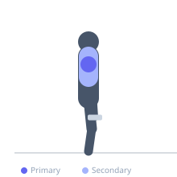
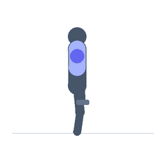

Exercise guide / Machine Lateral Raise
Machine Lateral Raise
The machine lateral raise uses a dedicated lateral raise machine that applies resistance through pads positioned against the elbows or wrists, maintaining consistent resistance throughout the full arc of motion. Unlike dumbbells, which lose most tension at the bottom of the movement, the machine provides meaningful resistance at the starting position and maintains it through the full range. This consistent tension profile makes it particularly effective for high-rep medial deltoid hypertrophy work.
Primary muscles
deltoid lateral
Secondary muscles
trapezius upper
Equipment
Shoulder Press Machine


Starting position
- Adjust the seat height so the pivot of the machine aligns with the shoulder joint. Sit upright and position the arms against the pads (elbows bent to 90 degrees or arms straight depending on machine type).
Setup
- Pivot alignment is critical — align the machine's axis of rotation with your shoulder joint before each set.
Steps
- Step 1: Sit with correct seat height; elbows or wrists positioned against the pads.
- Step 2: Starting from a lowered position, raise the arms out to the sides.
- Step 3: Raise until the arms reach shoulder height or slightly above.
- Step 4: Pause briefly at the top.
- Step 5: Lower slowly under control back to the starting position.
Coaching cues
- Align the pivot point with your shoulder first
- Slow and controlled — especially on the way down
- No shrugging
Breathing
- Exhale on the raise, inhale on the descent.
Range of motion
- Full lowered position to shoulder height.
Tempo
- 2-1-3-0
Common mistakes
- Incorrect seat height — misalignment reduces effectiveness and can irritate the shoulder
- Using momentum to initiate the movement
- Not lowering fully between reps
Safety
- Adjust seat for joint alignment before loading the machine
Training
- hypertrophy: 12–25 reps
- hypertrophy: 3–4 sets
- Rest: {'hypertrophy': 60}